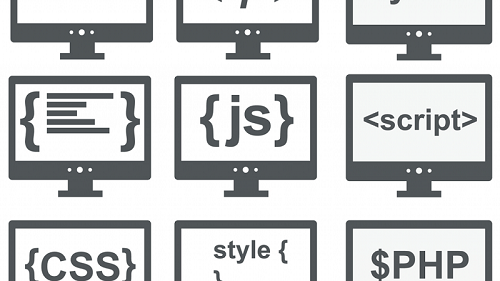

Setelah mengetahui pengertian CSS dan fungsinys, pertanyaan selanjutnya ialah bagaimana cara kerja CSS? Jawabannya, CSS membuat style di dalam halaman web dapat berinteraksi dengan elemen HTML. Elemen merupakan komponen HTML dari sebuah halaman web.
Di dalam CSS, selector ditulis di bagian kiri sebelum tanda kurung kurawal (curly bracket) pertama. Sedangkan informasi yang ada di dalam tanda kurung kurawal merupakan sebuah deklarasi yang di dalamnya mengandung properti dan nilai yang diaplikasikan ke dalam selector.
Contoh dari properti adalah ukuran font, warna, layout, format, dan lain sebagainya. Sedangkan nilai yang dimaksud adalah pengaturan yang diterapkan ke dalam properti. Misalnya dari contoh di atas, “color” dan “font-weight” merupakan properti, sedangkan “pink” dan “bold” merupakan sebuah nilai.
Jadi seluruh baris kode di dalam tanda kurung kurawal { color:pink; font-weight:bold; } merupakan sebuah deklarasi, sedangkan “p” (HTML paragraf) merupakan sebuah selector. Baik deklarasi dan selector merupakan prinsip dasar dari penggunaan CSS dan HTML. Prinsip ini juga dapat digunakan untuk mengatur ukuran font, warna background, format teks, dan lain sebagainya.